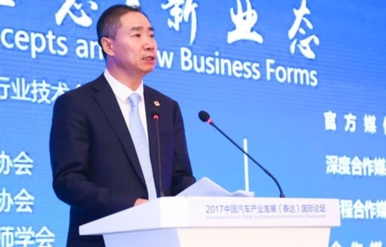
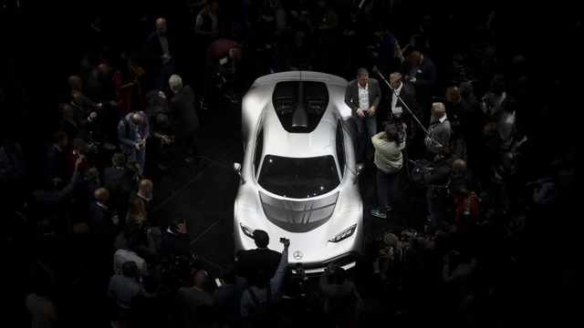
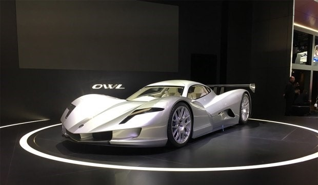
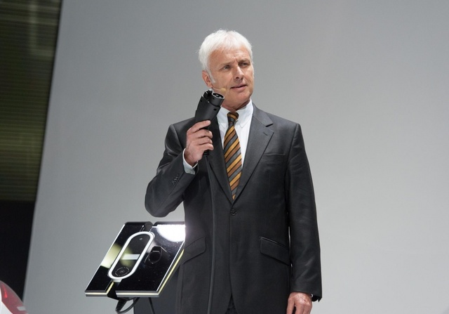
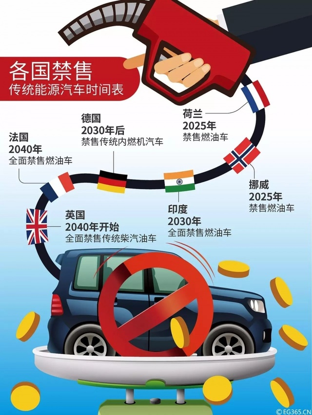
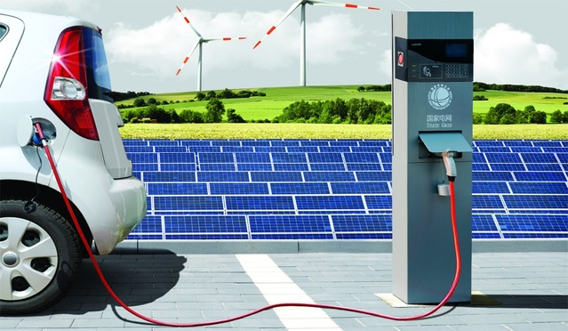
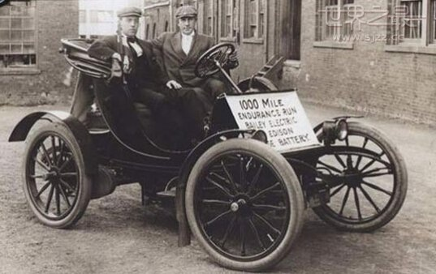
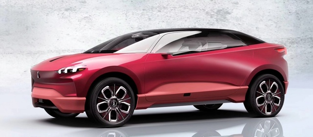

自周一始中国A股市场，以新能源汽车产业链（充电桩、锂电池、特斯拉、新能源车、燃料电池等概念）为概念的股票迎来了一轮大面积涨停。

这一切皆因工信部副部长辛国斌在9月9日天津举办的泰达论坛上的一番话：“一些国家已经制订了停止生产销售传统能源汽车的时间表，目前工信部也启动了相关研究，也将会同相关部门制订我国的时间表，这些举措必将推动我国汽车产业发展的环境和动力发生深刻变化。”
而在国内国外引发巨大争议的双积分制，原来有消息称将在8月底发布具体实施细则。而不久前财新网曾引述工信部内部人士的话称，中国有意将双积分政策推迟一年实施。这一消息曾大纾解了外界对这一政策可能产生影响的焦虑。
不过，辛国斌在
泰达论坛
现场的这一表态，似乎双积分政策实施的时间表将确定自2018年开始实施。
辛国斌的表态迅速引发了世界众多媒体的关注，这一政策如果切实对于世界汽车工业的影响将是巨大的。
而似乎是为了印证辛国斌副部长的判断，在昨天开幕的法兰克福车展上，汽车产业的第一强国德国三大品牌都发布了顺应历史潮流的电动化规划。

法兰克福车展前夕，宝马集团董事长科鲁格先生表示,到2025年，将提供25款电动车型，其中12款为纯电动车型；奔驰展示了全新电动概念车EQ A、smart vision EQ fortwo、氢燃料插电混合动力车型GLC F-CELL等一众电动概念产品，公司更表示还将投入100亿欧元，打造50款电力驱动的汽车产品。
而大众汽车CEO穆勒宣布新战略路线Roadmap E，并计划为旗下12个品牌300款车型创建电动版车型。大众将在2030年前花费200亿欧元（约240亿美元）开发电动车型，也即在2030年之前大众全系车型都将推出电动版车型，而大众正准备投入500亿欧元打造世界最大的电池生产工厂。
与之类似，捷豹路虎也宣布将在2020年全部车型提供电动版车型，配备纯电或者混动版本。

*日本ASPARK公司发布了旗下纯电动超跑车型——OWL
而在法兰克福车展，目之所见，来自日本、台湾的电动车造车产品同样惊艳，纯电风潮汹涌肆虐，可谓不电动毋宁死。
而在上个月德国总理默克尔在接受《SUPERillu》杂志采访时表示：“（对于禁售燃油车的时间，）我并不想明确决定哪一年。但是英国以及法国均计划将于2040年淘汰内燃机车，我认为这是一个合适的方案。”
这一表态被认为德国也将禁售燃油车。
而在这股潮流下，各种误传也此起彼伏。
被误传最广的则是大众将在2030年之前实现全部车型的电动化。
而在今天，大众汽车CEO穆勒在接受中国媒体采访时说，大众将在2030年之前在所有车型中提供一款电动版车型，这是为消费者提供一个选择，而不是所有车型全部电动化。

据中国汽车报今天报道：穆伦强调，正如他之前在不同场合的多次表态，相信在今后的很长一段时间内，传统燃油汽车和新能源汽车将会共存于市场，这会是必经的一个过程。因为目前新能源车特别是电动汽车技术并没有根本性的突破，在此之前要满足客户的需求，需要有技术更为先进的传统内燃机汽车存在。
而对于德国总理默克尔关于禁售燃油车的言论，穆勒道出了其中的因由：“对于禁售燃油车的话题，在德国也是大家讨论的热点。但我认为这与德国即将来临的大选有关系，大选过后，大家对于该话题的讨论会逐渐趋于理智。我相信，现在很多人热衷议论的在大城市禁售柴油车的观点，乃至更为激进的禁售传统内燃机汽车的议论很快就会平息。”
这一说法可谓打脸众多认为德国将禁售燃油车的传言。
关于德国将禁售燃油车，至今还有一个流传甚广的谎言：即早在2015后，德国的联邦议院通过一项决议，2030年之前在实现禁止欧盟销售内燃机，根据该决议，只有零排放车辆才能在市场上被允许。”而德国tagesschau网站报道称，虽然德国联邦参议院通过了这个提议，但是联邦参议院还没有直接的法律效力。而且德国交通部长Alexander Dobrindt也否定了这一提议。
他认为2030年实现在德国不允许新的汽油车和柴油车上路是荒谬的。
而对于英、法、挪威、荷兰等禁售燃油车的消息，同样是有部分人士甚至是政府官员放出了风声，但至今没有一个汽车制造业大国明确以政策的形式准备诉诸实施。

*这一没有明确依据的禁售燃油车的各国时间表广为传播
这其中最有可能实现全面对燃油车说“不”的国家只有挪威。作为只有500万人口的北欧小国，挪威电动车保有量已经超过10万辆，仅次于美国、中国和日本。挪威市场上每年卖出的新车中，已经有超过1/3是纯电动车或者插电混合动力。不过，这并不代表2025年挪威就真的能够实现燃油车禁售，挪威政代表此前表示，“这个协议还需要进行一些调整才能成为法律。”
而在今年7月27日，英国环境大臣迈克尔·戈夫表示，作为清洁空气政策的一部分，英国将于2040年起停止销售燃油汽车以减轻空气污染，并投资3.32亿美元用于解决道路污染。并将到2050年，行驶在英国道路上的汽车将全部实现零排放。
对于这一政策在英国也遭致了批评，其一这一政策显然是为了争取部分选民的呼声，而无落地细节，其二提前三十年发布一项产业的死亡时间表，有画饼充饥之感。
对于英国的交通政策，英国曾进行多次摇摆，有知乎网友曾将英国交通政策形象化如下：
昨天——出于对温室气体的担忧，大力推广柴油车；
今天——由于氮氧化物和颗粒物排放的原因，转向推广纯电动汽车并将柴油车妖魔化；
明天——随着纯电动汽车数量的增加，环保主义者开始觉醒并呼吁：因为政府的政策和大型的糟糕的电动汽车公司只对利润感兴趣，孩子们正在非洲的矿井中死去。其他的制约因素，比如经济方面的问题开始变得非常大?
后天——政府悄悄地放弃了对电动汽车的承诺和热情，就像他们之前对生物燃料那样？
对于英法等欧洲国家，中国的决策制定者应该明白，其政策立场有时出于政治正确的需要，会受其选民的影响，一如穆伦对默克尔的评论一样。
《AutoR智驾》（ID：ZhiNengQiChe）曾对诸多国家意图禁售燃油车的政策进行过详细的梳理，原文请见《英法德印还有中国都将全面禁售燃油车？别逗了，你脑子锈逗了！》。
如果说中国这样的在内燃机制造存在明显短板的国家意图通过发展电动车实现在汽车产业的话语权并攫取高额利润尚可理解，而在德法美这样的传统制造强国自断前程简直让人无法理解。
不过对于世界汽车工业电动化有一个现实最大的压力即来自《巴黎协定》与各国严厉的减排政策,虽是事实，但也不可盲目解读。
欧盟曾制定出全球最严格的汽车碳排放控制目标，该目标要求2020年欧盟范围内所销售的95%的新车二氧化碳排放平均水平须达到每公里不超过95克（相当于百公里4升），美国新车二氧化碳排放控制目标为每公里121克，中国新车二氧化碳排放控制目标为每公里117克，日本新车二氧化碳排放控制目标为每公里105克，基本相当于百公里5升油耗的标准。
这几大汽车制造大国如果依赖单纯的内燃机可以说没有一家制造商能够达到这一目标，对于这一几乎不可能完成的任务，而只有电动化和混和动力才能实现这一目标。
而为了完成这一目标并保护相关产业，欧盟制定了碳排放交易政策，美国加州为了实现零排放目标推出了积分政策，而中国参照欧美推出了双积分政策，这一看似从燃油车制造商抽税补贴新能源车的政策，其实也承认了燃油车将长期存在的现实。
在特朗普带领下的美国退出巴黎协定之后，中国做为世界上最大的碳排放国，既有责任践诺，推动中国空气治理，但也要防止电动车大跃进催毁中国来之不易正在成长的汽车制造工业。
在中国空气污染的构成中，与我国能源结构中70%以燃煤为主悉悉相关,而中国火力发电又是其中大头，通过消灭内燃机实现空气清洁是一厢情愿的想法。
从北方地区污染严重的雾霾现象，其主要污染物一半以上来自黄标车的氮排放和河北周边众多的炼钢燃煤碳排放，汽车尾气排放并非主因。
而在国内目前一个值得注意的现象，始于2014年的新造车运动出现以来，众多造车团队掀起了一轮对燃油车的污名化运动。
将空气污染，雾霾成因不分青红皂白地归于燃油车。
曾有某电动车销售总监对《AutoR智驾》表示，众多电动车品牌在推广之时，总是主打零排放、无污染概念，而消费者对于这一宣传并不兴趣，如果一辆车不能简单顺畅地将消费者从A地送到B地，而将消费者道德化以环保之名绑架消费者，这引发了消费者的反感。
目前电动车市场呈现典型的政策头脑发热与市场消费者不感冒的两极分化现象。
对于这一观点的批评，批评者可以拿出众多数字驳斥我们，中国新能源车消费连续三年将位居世界第一，在刚刚过去的8月份，中国电动车销量再次同比翻番，北京市场新能源车号牌已经摇尽等等。
笔者曾在凌晨时分拜访过一些公用充电桩，众多电动车出租司机睡在车内等待车辆充电。某国外电网驻华负责人曾说，目前电动车是将自己功能的不完善转嫁到消费者身上。
新能源乘用车的消费是在国家限制燃油车的基础上实现的被消费。

*在主要城市，中国充电桩的利用率极低，并因充电标准的变更导致一部分先期投入的充电桩废弃
而另外一个在国家的大力扶持之下，僵尸充电桩已经成了城市中的一道靓丽的垃圾，据IT时报报道，在上海8.6万个充电桩中，利用率仅为4%。另据某充电桩企业负责人自述，几年来在政府补贴和自有资金投入的充电桩中，因为充电标准的变更，多数已经没有使用价值。
在未来一片光明与现实的骨感面前，禁售燃油车将是一项愚蠢的决定。
核心原因无它，目前市场上众多电动车厂品无论在性价比还是驾乘体验上无法实现与燃油车的正面竞争。
如果电动车真是汽车工业的未来，它必须依靠自己的技术优势、驾乘体验等方面实现对燃然车的超越。
电动车固然拥有未来，但其带来的一系列问题，依然需要市场化的手段实现产业链的建设与推动。
而过于激进地推动电动化，在电动车产业链尚不完善之时，新的污染与资源浪费将可以预见。
大量续航里程短，充电繁琐、安全性能差、废弃电池无法处理的电动车充斥市场同样将引发新的环保灾难。
电动车的发展中国需要制定一份路线图，多从公共交通出行市场制定引导政策，而在私人出行领域则应注重引导，而非限制。

*1839年，苏格兰的罗伯特·安德森成功改造靠电力驱动的车辆，这也是世界第一辆电动汽车。
电动车的历史其实和燃油车的历史一样漫长，那为何汽车的发展没有沿续电力做为动力的道路一直行走下去，这显然是一个效率问题。今天电动车成为汽车业的明星，是技术进步推动的结果。
而中国自主品牌近年来在碰撞测试中屡得低分，并不断出现车辆解体的恶性事故，在造车周期中急功近利之心屡见不鲜。对于中国自主品牌不会因为一夜之间全部电动化了，而在安全、性能、体验方面获得全面提升。
所谓的电动超车并非一夕之功，过于激进的电动化政策也会分散中国自主品牌打造核心竞争力的资源与时间成本。

*长城汽车的高端品牌魏在法兰克福也推出了电动车，一直被批评缺乏电动车布局的长城汽车开始拥抱电动车
以长城汽车为例，其在专注程度上的积累与成绩有目共睹，投市场所好，同时实现迭代升级，其产品从性能到品牌都正日益获得市场认可，但在双积分压力下，不得已也需要拿出一部分精力去投资新能源汽车，无论从时间精力而是资金成本，事实上中国的电动化大跃进都在分散中国一部分正日益崛起品牌的的资源。
相比德系三强等汽车产业巨头，事实上他们在技术路线选择、政策转圜方面的空间要比中国正在成长的汽车品牌强大的多。而另一方面，中国自主品牌的成长状大，成长为世界品牌，离不开广大的亚非拉等海外市场，而短期内依靠电动车是不切实际的。
电动汽车大跃进的政策实不足取。
《AutoR智驾》是坚定的电动车的支持者，但是支持并不意味着激进,支持并不意味着呼吁国家的过度保护。
在这一系列都预言燃油车即将进入陌路的时刻，其实多数汽车人都赞同这样一个观点为：燃油车将在一个可预见的时间内，长期存在。
如果看中国证券市场这几日来的表现，被认为当然之选的比亚迪的涨势并不惊人，在今天甚至出现了回落，而真正强势的是一家提供电动大巴的安凯汽车。
客观而言，资本市场多数时候比国家政策更理性一些。
在电动车领域的支持也许将走一条从公共交通电动化再逐步乘用车电动化之路。
政府在国家投入巨额补贴的公共交通领域先行践行电动化，在民用出行市场充许自由竞争，推动电动车自我迭代发展，既有利于其为业自身良性发展淘汰冗余，也可防止国家资源与纳税人贡献的浪费。
中国不需要再次产生200多家电动汽车制造厂,今天可以说多数电动车产品尚未上市，供给侧过剩已是不争的事实。
我们宁愿相信这是中国政府经常使用的放出风声看市场如何反应的一次试探，而并非是决心已定的铁腕之举。